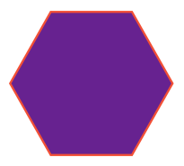
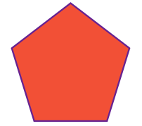
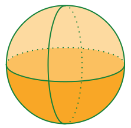
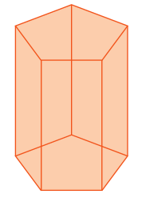
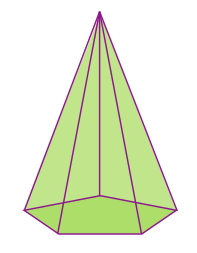
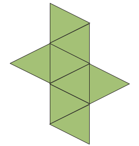
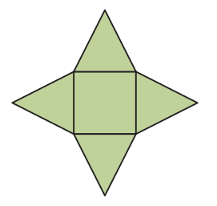
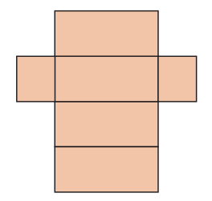

CONVERSANDO SOBRE FORMAS GEOMÉTRICAS
Neste Encontro, vamos conversar sobre formas geométricas planas e sólidas. É um assunto bastante divertido, pois faz muito tempo que você as conhece. Agora vamos falar de características que as diferenciam umas das outras. Olhando a figura acima, você já pode apontar algumas diferenças.
Olhando para os dois grupos de figuras, temos, no primeiro, as chamadas figuras planas. No segundo, os chamados sólidos geométricos.
As figuras planas do primeiro grupo, contêm uma categoria chamada de polígonos. As figuras poligonais são linhas fechadas formadas por segmentos de reta que não se cruzam. O círculo também é uma figura plana, mas não poligonal. Ele possui um conjunto de pontos internos. O contorno do círculo é chamado de circunferência.
As figuras sólidas ou os sólidos geométricos pertencem a uma categoria chamada de poliedros.
A principal diferença entre os dois grupos é com relação à dimensão delas. Vamos falar, então, das dimensões do espaço.
Dimensões do espaço
As dimensões do espaço que mais temos referência são as bidimensionais e as tridimensionais. Mas elas têm um ponto de partida. Elas se originam do ponto. O ponto é uma figura geométrica que não possui dimensão nem formato. Portanto para desenhá-lo não há necessidade de nenhuma dimensão. Ele é o zero.
A reta é representada por um conjunto de pontos. Ela é uma figura geométrica que possui apenas uma dimensão – comprimento. Por ter somente uma dimensão, é chamada unidimensional. Ela possui comprimento infinito, mas não possui largura ou profundidade. Pode ser, portanto, considerada apenas como espaço de uma dimensão como os segmentos de reta, as semirretas e a própria reta.
O plano é uma região plana fechada por no mínimo três segmentos de reta. As figuras planas possuem duas dimensões: o comprimento e a largura. É o caso das figuras do primeiro grupo da ilustração. Veja aqui um outro exemplo.
O sólido geométrico é uma figura geométrica que possui três dimensões: comprimento, largura e profundidade. São exemplos de figuras espaciais: pirâmide, prisma, esfera, cilindro etc.
Conversamos sobre as primeiras diferenças relacionadas às dimensões das figuras. Outra diferença que vemos é em relação aos elementos que compõem cada uma.
Elementos que formam os polígonos e os poliedros
Polígonos (figuras planas)
Os elementos que formam as figuras planas são os segmentos de reta que são os lados, que se tocam dois a dois, no chamado ponto de intersecção ou vértice, formando um plano fechado. Não se encontram nessa categoria as figuras circulares.
Veja o exemplo a seguir:
Poliedros (figuras geométricas sólidas)
Os poliedros são os sólidos geométricos, com exceção dos corpos redondos. Seus elementos são as faces (figuras planas), arestas e vértices. Veja o exemplo a seguir.

Na categoria “poliedros”, não consideramos os corpos redondos como a esfera, o cilindro e o cone. Dentro dessa categoria, temos os prismas, que têm algumas características especiais.
Prismas
Prisma é um sólido geométrico com faces planas e as bases, superiores e inferiores iguais e paralelas. Veja o exemplo do paralelepípedo a seguir.
Tipos de Prismas

Qualquer que seja o tipo de prisma, suas faces laterais são sempre paralelogramos.
Planificação dos sólidos geométricos
Como dissemos anteriormente, os sólidos geométricos são formados por figuras planas. Cada face é uma figura plana. Todos os sólidos podem ser planificados.
Você pode pegar diferentes objetos com diferentes formas e abri-los para ver suas formas planas.
Veja a seguir alguns exemplos de prismas e não primas.
Prismas

Não prismas
1. Sobre as figuras planas, podemos dizer que são
A) Figuras sólidas formadas por três dimensões: segmentos de reta,
altura e largura.
B) Regiões planas fechadas por segmentos de reta, que se tocam dois a
dois, e o vértice.
C) Figuras geométricas que não possuem dimensão nem formato.
D) Poliedros que possuem os elementos faces e arestas.
2. São poliedros,
A) O cilindro e o cone.
B) O cone e o cubo.
C) O prisma de base triangular e a esfera.
D) A pirâmide de base quadrada e o paralelepípedo.
3. Sobre os elementos que compõem os polígonos e os poliedros, pode-se dizer que
A) Os polígonos são formados por comprimento, largura e profundidade.
B) Os sólidos são polígonos formados por faces planas e bases
paralelas.
C) Os polígonos são formados por segmentos de reta, que se tocam dois
a dois formando um vértice.
D) Os poliedros sólidos geométricos incluem os corpos redondos e têm
como elementos as faces, arestas e vértices.
4. Uma figura poligonal é o
A) Cubo.
B) Retângulo.
C) Paralelepípedo.
D) Prisma de base triangular.
5. Este robô foi construído com sólidos geométricos.
Quantas figuras (de cores iguais) foram usadas?
A) 6
B) 7
C) 8
D) 9
6. Qual das figuras a seguir representa um polígono?
A)

B)

C)

D)

7. Qual das figuras a seguir representa um poliedro?
A)
B)
C)
D)

8. Qual das figuras a seguir representa um prisma?
A)
B)
C)
D)

9. Qual das figuras a seguir representa a planificação de um prisma?
A)

B)

C)
D)

10. Qual das figuras a seguir representa a planificação de uma pirâmide de base quadrada?
A)
B)

C)
D)

Em casa, apresente as figuras que aprendeu neste encontro.
No caderno, com base nos desenhos abaixo, dê o nome de cada figura
e apresente suas características.
Capriche para apresentar aos seus colegas!